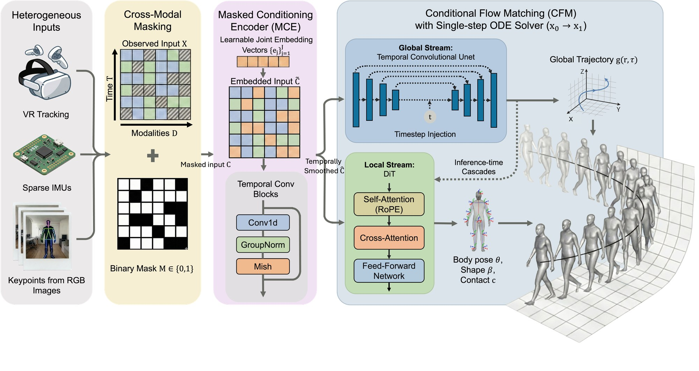
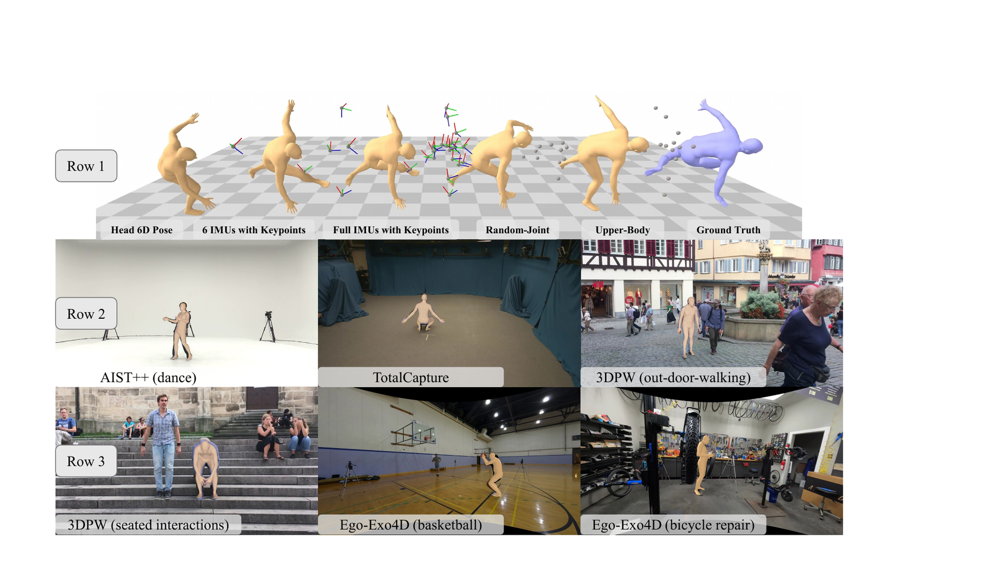

TL;DR — One model, any sensors. A few 3D keypoints, six IMU rotations, or a single head-tracker pose are enough to recover full-body 3D motion — in one step, at over 700 FPS. Motion capture no longer needs a dedicated model for each sensor setup: whatever a device measures is a partial view of one shared body model, and the rest is completed.
Recovering 3D human motion from sparse wearable sensors is challenging due to the inherent noise, occlusion, and instability of real-world tracking signals. Existing approaches are restricted to fixed sensor configurations and, when built on diffusion models, are computationally prohibitive for real-time deployment. We propose OmniPoser, a universal framework that recovers full-body SMPL motion from a flexible combination of heterogeneous inputs, such as 3D keypoints, sparse IMU rotations, head-mounted 6-DoF poses, or any subset thereof, within a single model. OmniPoser introduces a cross-modal masking mechanism paired with a Masked Conditioning Encoder, enabling one architecture to incorporate diverse sensor configurations through a masked design. A decoupled dual-stream generative backbone generates complete motion via Conditional Flow Matching, requiring only a single ODE integration step at inference. Across three settings and seven benchmarks, including in-the-wild Nymeria and Ego-Exo4D datasets, OmniPoser performs on par with state-of-the-art methods while running at over 700 FPS. The code will be open-sourced.
Keywords: Human motion recovery · Flow Matching models
Our key insight is that regardless of sensor modality, all observations can be cast as partial views of the same canonical body representation, and the completion of unobserved degrees of freedom can be formulated as a unified generative conditioning problem.
In order to support flexible inputs, we introduce a cross-modal masking mechanism that unifies heterogeneous sensor configurations within one model. This design enables one model to incorporate a wide range of input configurations, from optical motion capture (|V| = 22, rotations visible), to 5-point VR tracking (V = {head, hands, feet}, positions only), to egocentric head-only estimation (V = {head}) through our masked design.
Zeroing out missing entries, however, destroys the identity of unobserved joints and leads to poor recovery. We therefore design a Masked Conditioning Encoder (MCE) that replaces each missing joint with a learnable per-joint embedding, allowing the network to reason about which joints are absent and recover them accordingly.
The conditioned signal Ĉ produced by the MCE is fed into a generative model based on Conditional Flow Matching (CFM). A complete human motion can be split into global trajectory and local body pose, however, jointly predicting them from partially observed inputs is challenging because they live in different spaces: global trajectory is low-DoF (degrees of freedom) but must exhibit long-horizon coherence (drift-free), while local body pose is high-DoF but primarily needs to meet biomechanical constraints.
To address this, the denoising network vθ comprises two streams that are trained independently yet share the same MCE conditioning interface: a global stream that generates the root orientation r and translation τ, and a local stream that generates body pose θ, shape β, and foot contact c. At inference, a single Euler integration step maps Gaussian noise onto the motion manifold conditioned on the masked observations, enabling real-time motion recovery.

Overview of OmniPoser. Heterogeneous observations (multi-modal 3D keypoints and rotations) are unified through a cross-modal masking mechanism and processed by Masked Conditioning Encoder (MCE). A decoupled dual-stream architecture (a temporal convolutional UNet for global trajectory and a cross-attention Diffusion Transformer (DiT) for local body pose) generates SMPL parameters via Conditional Flow Matching, achieving real-time inference in a single ODE step.
To demonstrate the unified capability of OmniPoser, we categorize different sensor configurations and baseline methods into four settings.
Setting 1 (Sparse Observation): Only a sparse subset of joints is observed. We evaluate two schemes: (1) upper-body joint positions, evaluated on AMASS and Nymeria; and (2) a random joint masking regime, evaluated on AMASS. The baseline methods are RoHM and HuMoR.
Setting 2 (Egocentric Head 6D Pose): Only head position and rotation are available from HMD signals. We compare against EgoEgo and EgoAllo across AMASS, RICH, and Nymeria.
Setting 3 (Mocap data from 6 IMUs with keypoint positions): Six IMUs provide rotations at root and leaf joints, while upstream methods provide keypoint positions. We evaluate on AIST++, TotalCapture, and Nymeria, comparing with Stereo-Inertial Poser (SIP) and RobustCap.
For fair comparison, we train two versions of OmniPoser during evaluation: during Ours-S training, mask samples are drawn from the corresponding setting; during Ours-U training, mask samples are drawn from the masking configurations stated above, i.e., predefined sensor layouts and real-world observability patterns. Since there are no unified baselines at present, we construct RoHM-U and RoHM++-U, which are based on current specialist SOTA, RoHM.
Table 1: Quantitative results of Setting 1: Sparse Observation (Upper-body joint positions).
| Method | AMASS | Nymeria (In-the-wild) | |||||||
|---|---|---|---|---|---|---|---|---|---|
| JPE↓ | Acc↓ | Con↑ | Ska↓ | Pen↓ | JPE↓ | Acc↓ | Con↑ | Ska↓ | |
| HuMoR | 88.0 | 3.3 | 0.68 | 0.230 | 2.59 | 88.5 | 8.26 | 0.78 | 0.685 |
| RoHM | 34.8 | 2.3 | 0.95 | 0.078 | 0.69 | 59.3 | 7.2 | 0.91 | 0.610 |
| Ours-S | 32.1 | 2.7 | 0.94 | 0.031 | 1.84 | 21.1 | 1.39 | 0.95 | 0.033 |
| RoHM-U | 158.7 | 2.9 | 0.75 | 0.190 | 1.48 | – | – | – | – |
| RoHM++-U | 39.9 | 2.3 | 0.95 | 0.081 | 0.56 | – | – | – | – |
| Ours-U | 36.7 | 2.7 | 0.95 | 0.025 | 9.32 | – | – | – | – |
On AMASS, OmniPoser achieves 32.1 mm MPJPE, outperforming both RoHM (34.8 mm) and HuMoR (88.0 mm). We attribute this to the Masked Conditioning Encoder (MCE), which uses learnable embeddings to encode global structural priors for unobserved joints. On Nymeria, our model reduces MPJPE by ∼64% over RoHM (21.1 vs. 59.3 mm), alongside lower acceleration error, proving our learned priors transfer robustly in the wild.
Table 2: Quantitative results of Setting 1: Sparse Observation (Random joint masking) on AMASS.
| Method | JPE (mm) ↓ | Accel. (m/s²) ↓ | Contact ↑ | Skating ↓ |
|---|---|---|---|---|
| HuMoR | 80.5 | 3.3 | 0.78 | 0.184 |
| RoHM | 38.2 | 1.9 | 0.95 | 0.024 |
| Ours-S | 35.7 | 2.2 | 0.97 | 0.018 |
| Ours-U | 49.3 | 2.6 | 0.93 | 0.019 |
Table 3: Quantitative results of Setting 2: Egocentric Head 6D Pose.
| Method | AMASS | RICH (Cross-domain) | Nymeria (Wild) | ||||||||
|---|---|---|---|---|---|---|---|---|---|---|---|
| JPE↓ | PA↓ | Con↑ | T_h↓ | JPE↓ | PA↓ | Con↑ | T_h↓ | JPE↓ | PA↓ | Con↑ | |
| EgoEgo | 167.4 | 145.8 | 0.92 | 54.9 | 207.8 | 187.8 | 0.88 | 66.5 | 135.8 | 117.2 | 0.57 |
| EgoAllo | 119.7 | 101.1 | 1.00 | 6.2 | 176.2 | 160.1 | 0.96 | 8.9 | 103.0 | 89.3 | 0.63 |
| Ours-S | 83.2 | 73.5 | 0.92 | 17.1 | 131.6 | 111.5 | 0.71 | 25.7 | 40.7 | 36.2 | 0.94 |
| RoHM-U | 124.3 | 101.5 | 0.94 | 36.7 | 195.0 | 115.4 | 0.62 | 56.8 | – | – | – |
| RoHM++-U | 94.5 | 92.5 | 0.96 | 19.5 | 126.3 | 112.3 | 0.72 | 44.8 | – | – | – |
| Ours-U | 86.2 | 69.8 | 0.92 | 33.2 | 134.8 | 106.4 | 0.65 | 50.7 | – | – | – |
On AMASS, Ours-S achieves 83.2 mm MPJPE, Ours-U achieves 86.2 mm MPJPE (∼30% improvement over EgoAllo's 119.7 mm and 50% over EgoEgo's 167.4 mm). Without hard-coding the head pose, our DiT's cross-attention propagates the 6-DoF HMD signal globally, allowing our method to outperform those baselines on full-body recovery.
Table 4: Quantitative results of Setting 3: Mocap Data from 6 IMUs with Keypoint Positions.
| Method | AIST++ | TotalCapture | Nymeria (In-the-wild) | ||||||||||||||||||
|---|---|---|---|---|---|---|---|---|---|---|---|---|---|---|---|---|---|---|---|---|---|
| PA↓ | JPE↓ | PVE↓ | TE↓ | HS↓ | Jrk↓ | FS↓ | PA↓ | JPE↓ | PVE↓ | TE↓ | HS↓ | Jrk↓ | FS↓ | PA↓ | JPE↓ | PVE↓ | TE↓ | HS↓ | Jrk↓ | FS↓ | |
| SIP | 23.1 | 29.8 | 39.0 | 11.31 | 8.91 | 1.50 | 0.57 | 28.6 | 46.5 | 54.3 | 5.42 | 10.6 | 0.94 | 0.69 | 15.2 | 17.0 | 16.8 | 4.13 | 5.22 | 0.059 | 0.25 |
| RobCap | 24.0 | 33.1 | 43.2 | 19.92 | 9.34 | 2.49 | 0.61 | 33.5 | 48.7 | 63.4 | 23.5 | 13.4 | 2.09 | 1.40 | 16.5 | 19.5 | 19.4 | 4.52 | 7.51 | 1.56 | 0.54 |
| RobCap3D | 21.8 | 28.5 | 37.6 | 15.82 | 8.95 | 2.31 | 0.59 | 27.9 | 42.3 | 52.8 | 9.74 | 12.8 | 1.87 | 1.22 | 15.0 | 17.8 | 17.5 | 4.25 | 7.18 | 1.41 | 0.48 |
| Ours-S | 19.4 | 26.0 | 32.9 | 16.54 | 7.40 | 0.29 | 0.22 | 26.5 | 36.2 | 51.2 | 15.9 | 13.3 | 0.16 | 0.81 | 14.5 | 16.6 | 16.6 | 6.83 | 7.50 | 0.048 | 0.39 |
| RoHM-U | 123.5 | 157.5 | 185.9 | 76.3 | 38.1 | 0.21 | 9.49 | 78.6 | 95.3 | 100.4 | 22.8 | 19.5 | 0.19 | 0.95 | – | – | – | – | – | – | – |
| RoHM++-U | 89.5 | 136.5 | 128.5 | 56.1 | 32.1 | 0.21 | 9.51 | 18.7 | 29.0 | 26.3 | 17.5 | 8.3 | 0.07 | 2.06 | – | – | – | – | – | – | – |
| Ours-U | 21.4 | 29.3 | 40.4 | 17.5 | 7.9 | 1.73 | 1.05 | 23.4 | 35.5 | 47.2 | 15.7 | 11.1 | 0.15 | 0.86 | – | – | – | – | – | – | – |
On Nymeria, OmniPoser's lower MPJPE (16.6 mm) and jerk (0.048 m/s³) reinforce that our cross-modal masking conditioning effectively learns unified kinematic priors, avoiding the need to tune multi-modal sensor fusion heuristics for real-world deployment.
Bold and underlined values indicate the best and second-best results, respectively. – : not available.
We present qualitative visualization results on 3DPW and Ego-Exo4D to show performance in unconstrained outdoor and ego-centric scenes. Given a speed-vault clip, one model produces plausible reconstructions under five distinct masking configurations at inference time.
On 3DPW, OmniPoser produces coherent walking gaits and seated interactions in outdoor scenes, validating that kinematic priors learned from controlled mocap datasets generalize to in-the-wild domains. On Ego-Exo4D, OmniPoser recovers whole-body motion from ego-centric basketball and bicycle-repair activities involving complex body-object interactions, showing our method's applicability to AR/VR capture scenes.

Qualitative results. Row 1: Five masking configurations applied to the same speed-vault sequence from AMASS dataset. Meshes in gold are the predictions. The mesh on the rightmost is the ground truth. Row 2–3: Visualizations on different datasets. For more qualitative results, please refer to the supplementary material.
@inproceedings{liu2026omniposer,
author = {Liu, Minghao and Tang, Tutian},
title = {OmniPoser: Flexible Human Motion Recovery in the Wild with Masked Flow Matching},
booktitle = {European Conference on Computer Vision (ECCV)},
year = {2026}
}This work was supported by Fundamental and Interdisciplinary Disciplines Breakthrough Plan of the Ministry of Education of China, the Shanghai Committee of Science and Technology, China (Grant No. 24511103200), Shanghai Artificial Intelligence Laboratory, and the XPLORER PRIZE grants.